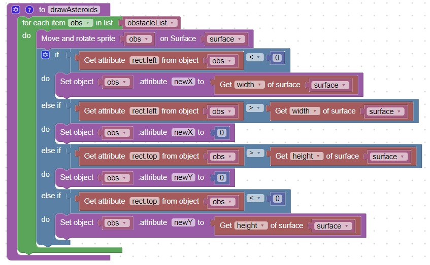
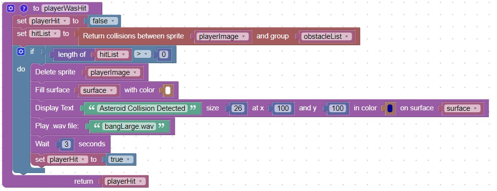
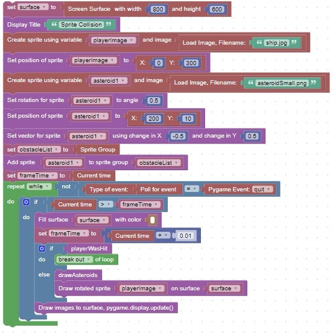

You can detect collisions between a sprite and a group of sprites
Code
This code will draw the asteroid.

This code will check for collisions with the player image

This code will run until the player image has a collision or the user closes the window
